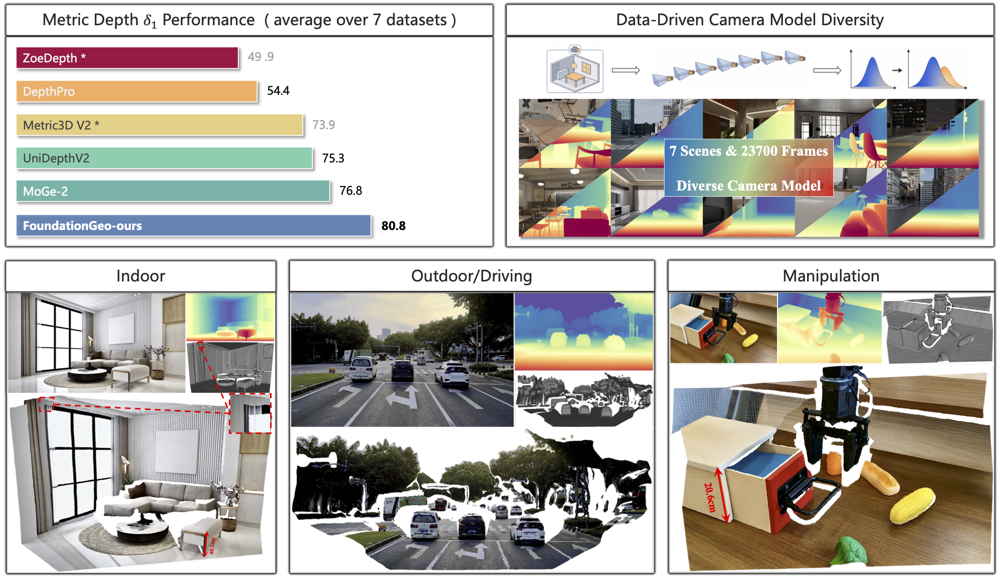

Monocular Geometry Estimation
FoundationGeo: Learning Spatial Pixel-Wise Fields for Monocular Metric Geometry
A two-stage framework leveraging pixel-wise spatial fields and camera-diverse training for robust monocular metric geometry across domains and camera models.
